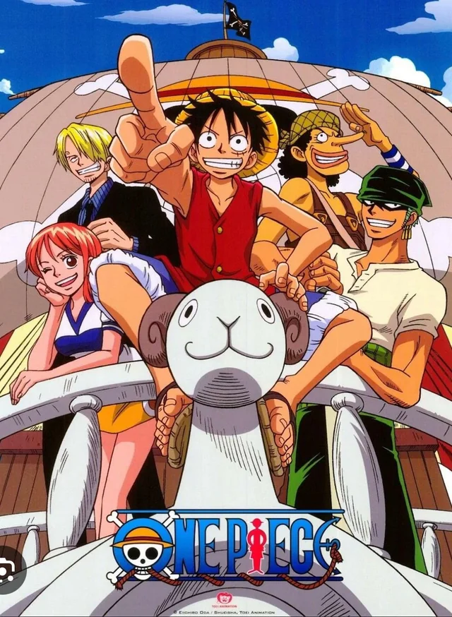
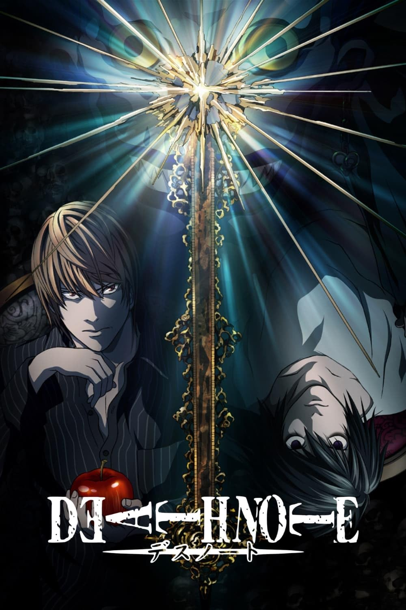
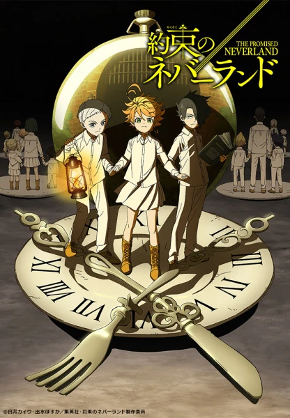
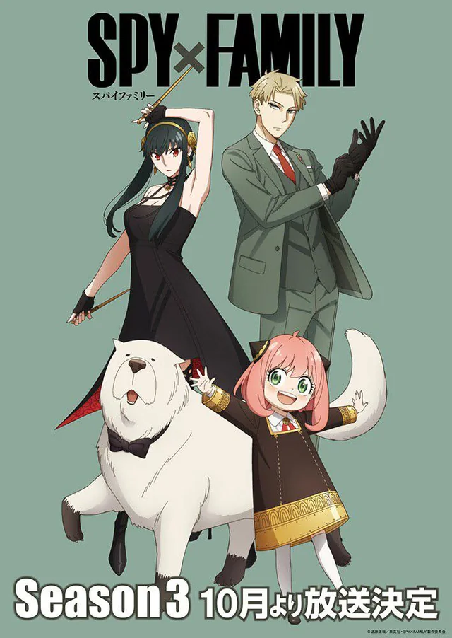
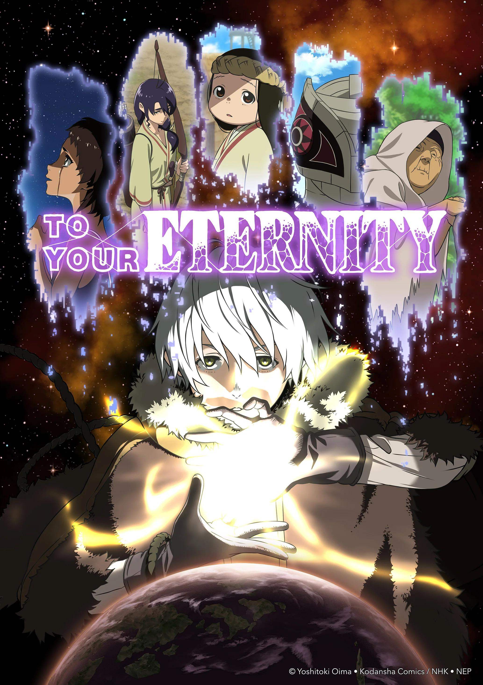

O gênero shounen (ou shōnen) nos animes é voltado principalmente para o público jovem masculino, mas conquistou fãs de
todas as idades ao redor do mundo. Suas histórias geralmente acompanham protagonistas determinados que buscam alcançar
grandes objetivos, como se tornarem mais fortes, proteger pessoas importantes ou realizar sonhos aparentemente impossíveis.
Uma das principais características do shounen é o foco em ação, superação e crescimento pessoal. Os personagens
frequentemente enfrentam desafios cada vez maiores, participam de batalhas intensas e passam por treinamentos rigorosos
para evoluir suas habilidades. Além disso, valores como amizade, esforço e perseverança são centrais, aparecendo em
momentos decisivos da narrativa.
O gênero também costuma seguir estruturas marcantes, como arcos de torneio, rivais fortes, transformações poderosas e
sistemas de habilidades únicos. Mesmo com esse padrão, o shounen é bastante versátil e pode incorporar elementos de
comédia, drama, fantasia e aventura.

Fullmetal Alchemist: Brotherhood é uma série de anime baseada no mangá de mesmo nome, criado por Hiromu Arakawa. A história
segue os irmãos Edward e Alphonse Elric, que vivem em um mundo onde a alquimia é uma ciência avançada. Após uma tentativa
desastrosa de ressuscitar sua mãe usando alquimia proibida, os irmãos pagam um preço alto: Edward perde um braço e uma perna,
enquanto Alphonse tem seu corpo completamente destruído e sua alma presa a uma armadura.
Determinados a recuperar seus corpos, os irmãos embarcam em uma jornada para encontrar a lendária Pedra Filosofal, que dizem
ter o poder de amplificar as habilidades alquímicas e permitir que eles revertam os danos causados pela transmutação falha.
Ao longo do caminho, eles enfrentam diversos desafios, incluindo confrontos com outros alquimistas, membros de uma organização
militar corrupta e criaturas perigosas. A série é conhecida por sua trama complexa, personagens bem desenvolvidos e temas
profundos sobre sacrifício, redenção e a natureza da humanidade.

Shingeki no Kyojin (Attack on Titan) se passa em um mundo onde a humanidade vive cercada por enormes
muralhas para se proteger dos Titãs, criaturas gigantes que devoram humanos sem motivo aparente. A história acompanha Eren
Yeager, um jovem que jura eliminar todos os Titãs após testemunhar a destruição de sua cidade.
Ao lado de seus amigos Mikasa Ackerman e Armin Arlert, Eren se junta à Tropa de Exploração, um grupo militar responsável por
enfrentar os Titãs fora das muralhas e buscar respostas sobre sua origem.
Conforme a história avança, segredos sobre o mundo, os próprios Titãs e a humanidade começam a ser revelados, mudando
completamente a percepção dos personagens sobre quem são seus verdadeiros inimigos.

Koe no Katachi (A Silent Voice) acompanha Shoya Ishida, um jovem que, quando criança, praticava bullying
contra Shoko Nishimiya, uma colega surda que havia acabado de se transferir para sua escola.
Anos depois, consumido pela culpa e arrependimento, Shoya decide procurar Shoko para tentar se redimir e consertar os erros
do passado. No entanto, essa reconexão não é simples, já que ambos carregam traumas profundos e dificuldades em se comunicar.
Ao longo da história, eles enfrentam suas inseguranças, lidam com as consequências de suas ações e tentam reconstruir laços,
enquanto aprendem sobre empatia, perdão e aceitação.

Haikyuu!! acompanha Shoyo Hinata, um garoto apaixonado por vôlei que, apesar de sua baixa estatura, sonha em se tornar um
grande jogador. Inspirado por um lendário atleta conhecido como “Pequeno Gigante”, Hinata decide entrar no time de vôlei de
sua escola e provar que altura não define talento.
Ao ingressar no ensino médio, ele acaba jogando ao lado de Tobio Kageyama, um levantador genial com quem já teve uma
rivalidade no passado. Apesar das diferenças, os dois precisam aprender a trabalhar juntos para fortalecer o time da escola
Karasuno.
Ao longo da história, a equipe enfrenta adversários cada vez mais fortes, desenvolvendo estratégias, habilidades e espírito
de equipe. Cada partida é intensa e cheia de emoção, destacando o crescimento individual e coletivo dos jogadores.

One Piece acompanha Monkey D. Luffy, um jovem pirata que sonha em se tornar o Rei dos Piratas. Após comer
uma fruta misteriosa conhecida como Akuma no Mi, seu corpo ganha propriedades de borracha, permitindo que ele lute de maneiras
únicas.
Determinando a encontrar o lendário tesouro “One Piece”, deixado pelo antigo Rei dos Piratas, Gol D. Roger, Luffy parte em
uma grande jornada pelos mares. Ao longo do caminho, ele reúne uma tripulação diversificada, os Piratas do Chapéu de Palha,
formada por companheiros com sonhos próprios, como se tornarem grandes guerreiros, navegadores ou artistas.
Durante a aventura, o grupo enfrenta inimigos poderosos, organizações perigosas e desafios em ilhas completamente diferentes
umas das outras, enquanto descobrem mistérios sobre o mundo.

Kimetsu no Yaiba (Demon Slayer) acompanha Tanjiro Kamado, um jovem gentil que vive com sua família até
ter sua vida destruída quando eles são brutalmente assassinados por demônios. A única sobrevivente é sua irmã, Nezuko Kamado,
que acaba sendo transformada em um demônio.
Determinado a salvar sua irmã e vingar sua família, Tanjiro decide se tornar um caçador de demônios. Ao longo de sua jornada,
ele aprende técnicas de combate e enfrenta criaturas perigosas, enquanto busca uma forma de fazer Nezuko voltar a ser humana.
Durante o caminho, ele encontra aliados importantes e enfrenta inimigos cada vez mais fortes, incluindo demônios poderosos
ligados à origem de toda a tragédia.

Death Note acompanha Light Yagami, um estudante extremamente inteligente que encontra um caderno
misterioso capaz de matar qualquer pessoa cujo nome seja escrito nele. Esse objeto pertence ao shinigami Ryuk, que passa a
observar as ações de Light por diversão.
Decidido a criar um “mundo perfeito”, livre de criminosos, Light assume a identidade de Kira e começa a eliminar aqueles que
considera culpados. No entanto, suas ações chamam a atenção das autoridades e de um enigmático detetive conhecido como L,
dando início a um intenso jogo psicológico entre os dois.
À medida que a disputa se intensifica, estratégias, manipulações e sacrifícios se tornam cada vez mais extremos, colocando
em questão o verdadeiro significado de justiça.

Yakusoku no Neverland (The Promised Neverland) acompanha Emma, Norman e Ray, três crianças que vivem em
um orfanato aparentemente perfeito chamado Grace Field House.
No entanto, essa vida tranquila esconde um segredo terrível. Ao descobrirem a verdade por trás do orfanato e o destino das
crianças, os protagonistas percebem que precisam fugir o mais rápido possível para sobreviver.
Sem poder confiar em adultos e sob constante vigilância da enigmática Isabella, eles elaboram planos complexos para escapar,
usando inteligência, estratégia e trabalho em equipe.

Spy x Family acompanha Loid Forger, um espião de elite conhecido como “Twilight”, que recebe a missão de
se infiltrar na alta sociedade para evitar um conflito entre nações. Para isso, ele precisa formar uma família falsa como
parte do disfarce.
Assim, ele adota Anya Forger, uma garotinha aparentemente comum — mas que secretamente possui poderes telepáticos — e se
casa com Yor Forger, uma mulher gentil que, na verdade, é uma assassina profissional.
Sem saber das verdadeiras identidades uns dos outros (com exceção de Anya, que lê mentes), a família vive situações caóticas
e divertidas enquanto tenta manter as aparências.

Fumetsu no Anata e (To Your Eternity) acompanha Fushi, uma entidade imortal enviada à Terra sem emoções,
identidade ou conhecimento. Inicialmente, ele assume a forma de objetos e criaturas ao seu redor, aprendendo gradualmente a
interagir com o mundo.
Ao longo de sua jornada, Fushi encontra diferentes pessoas que marcam profundamente sua existência, ensinando-lhe sobre
amizade, dor, perda e o valor da vida. Cada encontro contribui para seu crescimento emocional e para a construção de sua
própria identidade.
No entanto, sua imortalidade também o expõe a constantes despedidas e conflitos, especialmente diante de ameaças que buscam
destruí-lo.
fonte:
Melhores animes shounen.